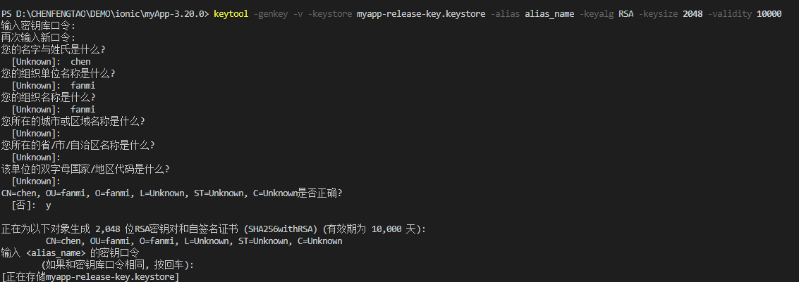

ionic 发布release版本
https://ionicframework.com/docs/cli/commands/cordova-build
Android版本
运行以下cli命令：
1 | ionic cordova build android --prod --release |
这将产生基于设置的发布版本config.xml的platforms/android/build/outputs/apk应用程序的目录。Ionic应用程序将在此文件中预设默认值，但可以将其更改为自定义构建
APK签名
首先，必须签署未签名的APK。如果已生成签名密钥，请跳过这些步骤并使用该步骤。使用Android SDK附带的keytool命令生成私钥：
1 | keytool -genkey -v -keystore myapp-release-key.keystore -alias alias_name -keyalg RSA -keysize 2048 -validity 10000 |

my-release-key.keystore将在当前目录中创建一个被调用的文件;
要签署未签名的APK，使用包含在Android SDK中的jarsigner工具：
1 | jarsigner -verbose -sigalg SHA1withRSA -digestalg SHA1 -keystore myapp-release-key.keystore app-release-unsigned.apk alias_name |